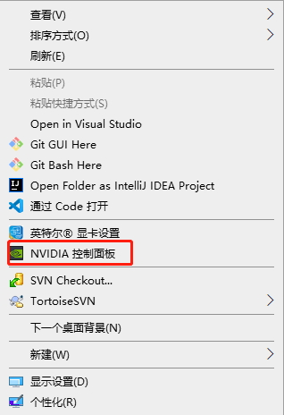
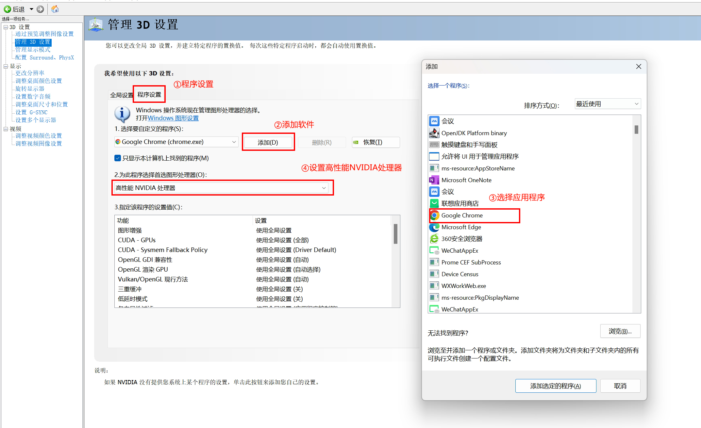
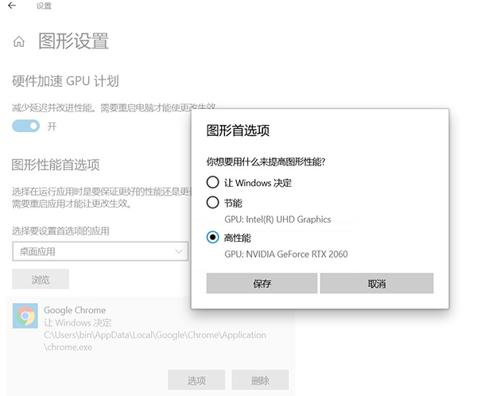
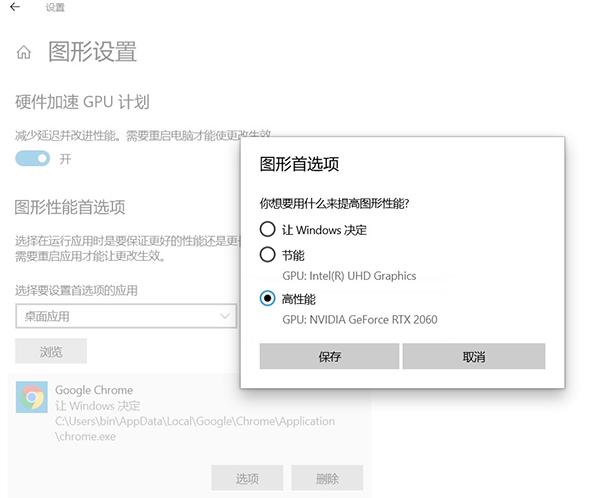

SuperMap GIS 三维硬件设置优化
简介
为了体验更好的3D大型游戏，好的显卡必不可少。若配置不方法对，体验感也会大打折扣。同样，在SuperMap产品中也需要好的显卡及正确的显卡配置来提升三维效果体验感。
我们比较推荐的是英伟达的GTX系列的游戏级别显卡，比如GTX1060、RTX2060、RTX3060及以上。
查看硬件显卡
如何查看一台电脑的的显卡配置呢？我们可以从以下几个方面来查看（以Windows10操作系统为例）。
- 任务管理器：
在Windows操作系统中，打开【任务管理器】找到【性能】选项卡，在此页面中找到【GPU】字样就可以查看系统的显卡情况。如下图所示，可以看到当前硬件中有两个显卡一个是【GPU0】集成显卡，【GPU1】英伟达显卡，选中可查看其更多详细信息。

查看任务管理器
- 设备管理器：
找到【我的电脑】右键点击【属性】，找到并点击【设备管理器】。在弹出的界面中找到【显示适配器】就可以看到当前设备的显卡情况。如下图所示：

查看设备管理器
- 借助第三方工具GPU-Z查看：
下载GPU-Z软件运行该软件可以查看当前显卡的更多详细信息。如下图所示：

第三方工具GPU-Z
显卡设置
当确定了当前硬件的显卡后，就需要进一步设置显卡配置，通常分为两种显卡，NVIDIA和AMD。我们就以这两款显卡为例来说明。
1、NVIDIA显卡设置
主要流程就是在【NVIDIA控制面板】和【图形设置】里将全局和程序都设置为【高性能】，配置流程如下
- NVIDIA控制面板：
在系统的【控制面板】或者在桌面右键找到中找到【NVIDIA控制面板】
NVIDIA控制面板
- 显卡设置：
在打开的【NVIDIA控制面板】中点击【管理3D设置】。然后选择【全局设置】并在首选图形处理器中选择【高性能NVIDIA处理器】如下图所示：

显卡设置
在选择【高性能NVIDIA处理器】后还可对下面的【设置】进行设置。可参考以下几个设置参数：
注：鼠标移动到对应的功能上方时，在下面会介绍该设置的意义
- 三重缓冲设置为关闭
- 垂直同步设置为关闭
- 各向异性过滤设置为8X
- 程序设置：
在【全局设置】完成后，还需要对应用到三维场景的程序进行设置。
程序设置
至此在【NVIDIA控制面板】中的设置已经完成，但是如果是Windows10及其以上版本还需要多做一个设置：【图形设置】
- 图形设置：
在Windows桌面右键点击【显示设置】，找到【图形设置】，浏览并选中要设置的应用程序的运行文件exe。在下面列表中选中程序，并在【选项】中选择【高性能】。
至此在【NVIDIA控制面板】中的设置已经完成，但是如果是Windows10及其以上版本还需要多做一个设置：【图形设置】
 
图形设置
到这里NVIDIA显卡的配置才算全部结束。
2、AMD显卡设置
在【Radeon设置】中，将全局和程序都设置为【高性能】，配置流程如下：
在Windows 空白桌面中点击右键找到【Radeon设置】，依次点击【游戏】、【全局设置】、【更改纹理过滤质量为性能】、【更改等待垂直刷新为始终关闭】。
回到【Radeon设置】首页，依次点击【系统】、【选中安装好的程序】、【选择高性能】。